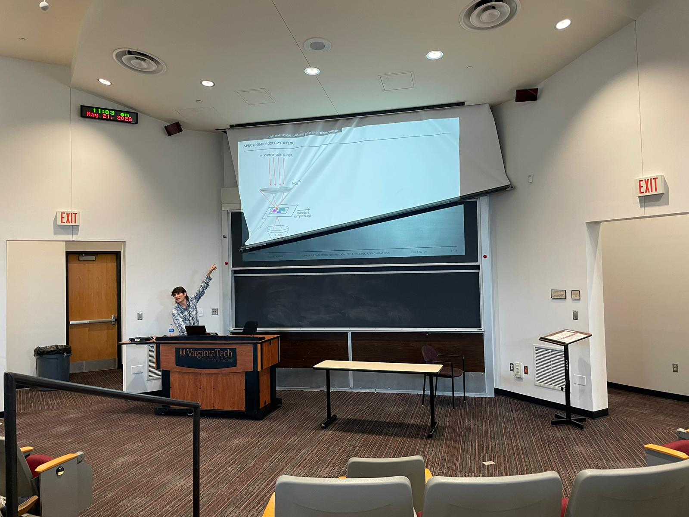
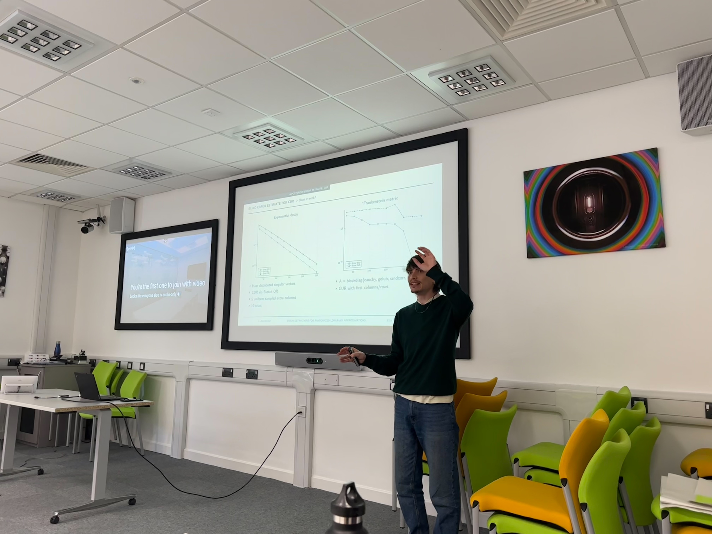
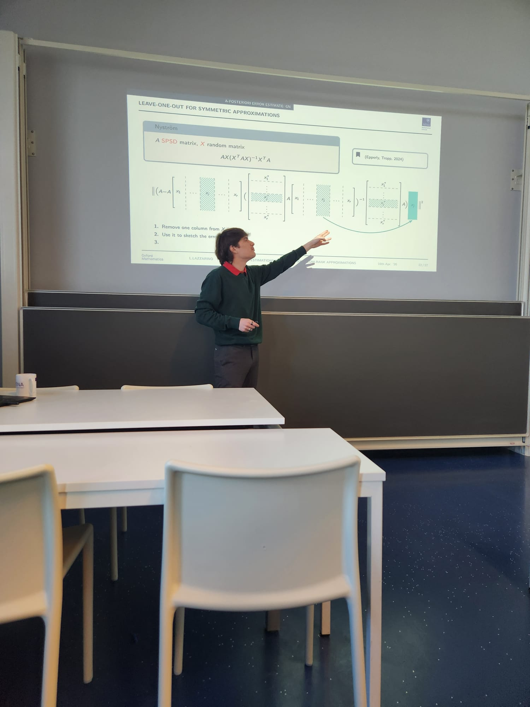
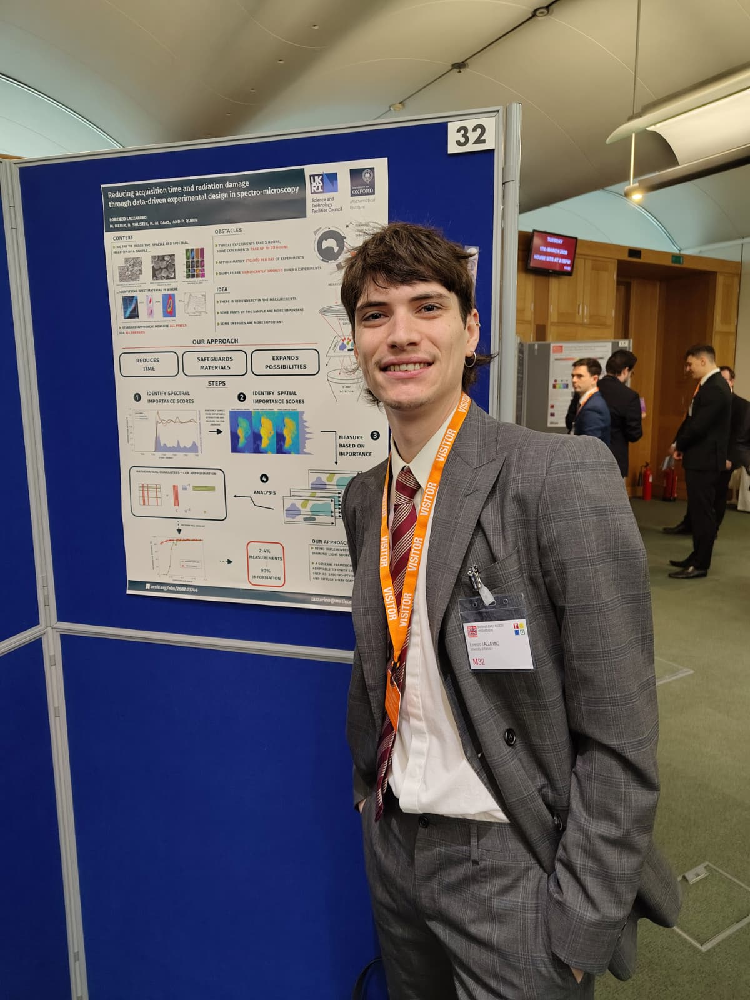
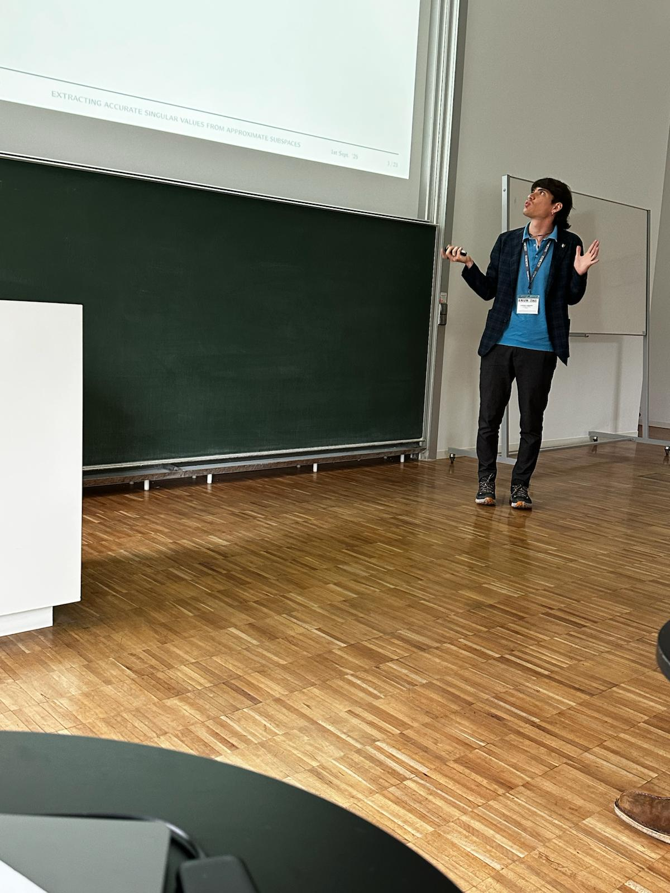
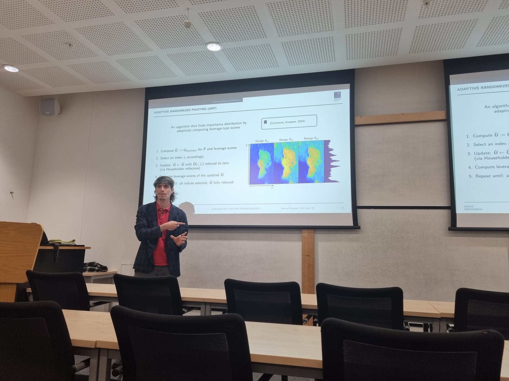
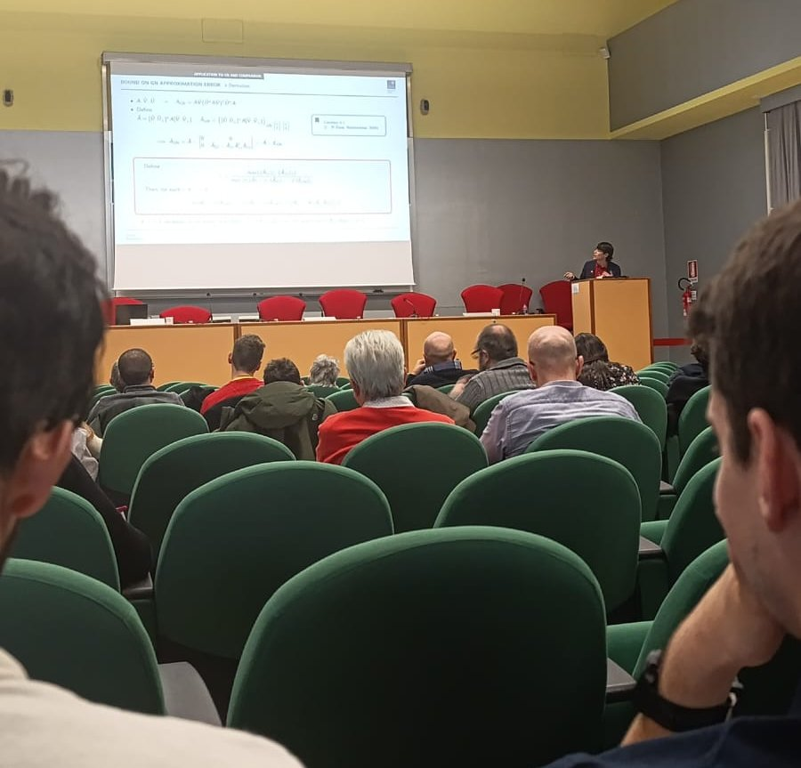
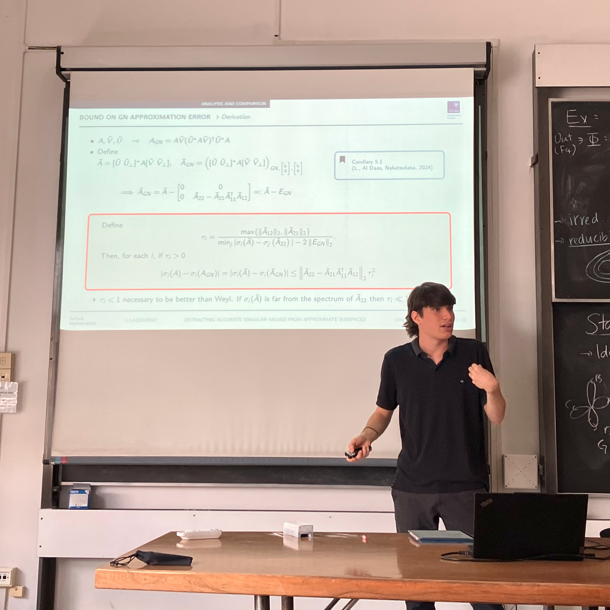
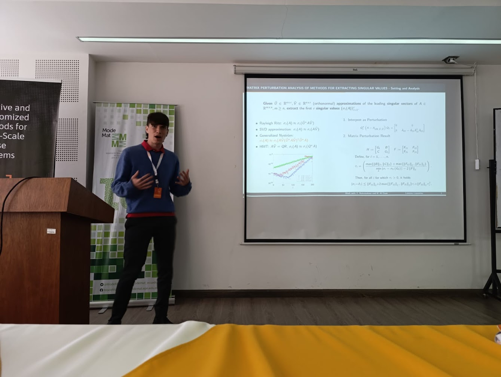
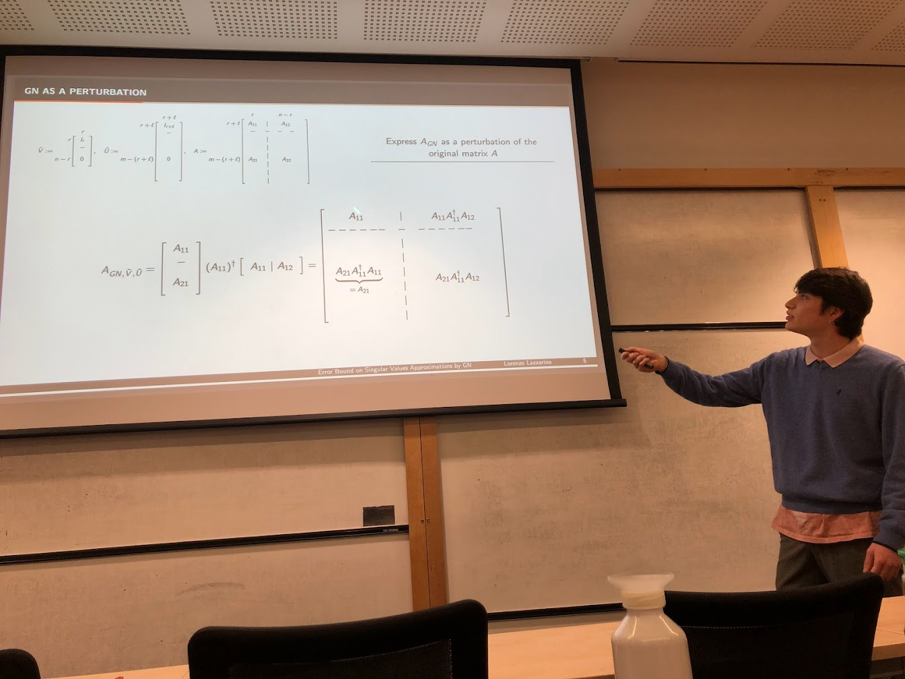

> Home /
Talks
A-posteriori error estimates for randomized low-rank
approximations
ILAS 2026
22 May 2026, Virginia Tech
ILAS 2026
22 May 2026, Virginia Tech

Error estimation for randomized low-rank approximations
PhD Showcase
11 May 2026, RAL Campus
PhD Showcase
11 May 2026, RAL Campus

Error
estimation for randomized low-rank approximations
COMPMATH SEMINAR
16 April 2026, University of Groningen
COMPMATH SEMINAR
16 April 2026, University of Groningen

Reducing acquisition time and radiation damage through data-driven
experimental design in spectro-microscopy
STEM for BRITAIN
17 March 2026, House of Commons, UK Parliament
STEM for BRITAIN
17 March 2026, House of Commons, UK Parliament


Extracting accurate singular values from approximate
subspaces
The 30th Biennial Numerical Analysis Conference
25 June 2025, University of Strathclyde
The 30th Biennial Numerical Analysis Conference
25 June 2025, University of Strathclyde

Reducing
acquisition time and radiation damage: Data-driven subsampling for
spectromicroscopy
Numerical Analysis Group Internal Seminar
05 June 2025, University of Oxford
Numerical Analysis Group Internal Seminar
05 June 2025, University of Oxford

Matrix
perturbation analysis of methods for extracting singular values given approximate
subspaces
Numerical Analysis Seminar
20 February 2025, Charles University, Prague (online)
Numerical Analysis Seminar
20 February 2025, Charles University, Prague (online)

Extracting
accurate singular values from approximate subspaces
Due Giorni di Algebra Lineare Numerica e Applicazioni
20/21 January 2025, Università di Pisa
Due Giorni di Algebra Lineare Numerica e Applicazioni
20/21 January 2025, Università di Pisa

Extracting accurate
singular values from approximate subspaces
PYSANUM
10 October 2024, Università di Pisa e Scuola Normale Superiore
PYSANUM
10 October 2024, Università di Pisa e Scuola Normale Superiore

Matrix
perturbation analysis of methods for extracting singular values
Gene Golub SIAM Summer School, 3 minutes presentations
29 July 2024, Quito
Gene Golub SIAM Summer School, 3 minutes presentations
29 July 2024, Quito

Error bound
on singular values approximations by generalized Nyström
Numerical Analysis Group Internal Seminar
05 March 2024, University of Oxford
Numerical Analysis Group Internal Seminar
05 March 2024, University of Oxford

Numerical approximation of the time-ordered exponential for spin dynamic
simulation
Workshop on Numerical Mathematics
20/21 July 2023, Charles University, Prague
Workshop on Numerical Mathematics
20/21 July 2023, Charles University, Prague